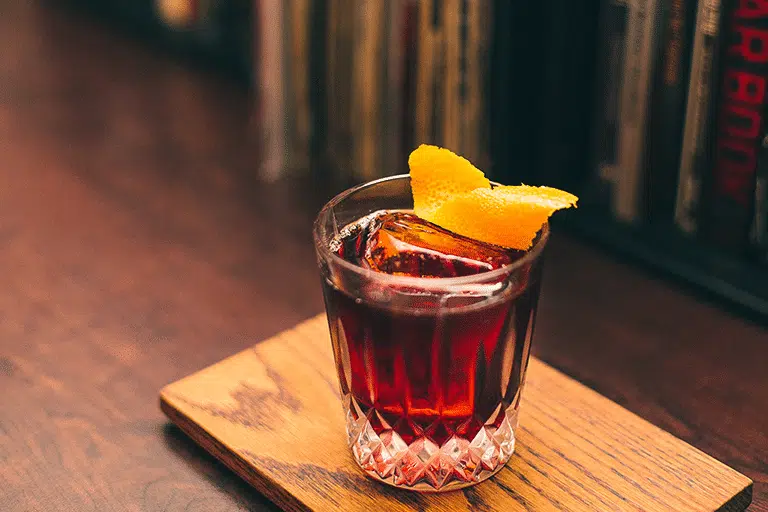

ODrink mais amado de 2020 para seu
O Mais
Negroni
O Negroni é um coquetel feito de uma parte de gim, uma parte de vermute rosso, e uma parte de Campari, enfeitado com casca de laranja. É considerado um aperitivo. O coquetel é de origem italiana e sua receita deriva-se da receita do clássico americano.

Historia do Drink
Origem do drink negroni Em suas idas ao Café, Negroni costumava tomar um coquetel americano, entretanto, um belo dia tudo mudou. Em uma tarde de 1919, Negroni solicita ao bartender algo diferente, com o sabor mais marcante e forte do que de costume, então, o amigo resolveu criar algo de última hora para ele Porque se chama Negroni?O cliente era o icônico conde Camillo Negroni, e sabe-se lá em que circunstâncias de homenagem ou apropriação cedeu seu nome à mistura, que em pouco tempo passou a ser chamada de “o drinque do conde Negroni” e logo então “o drinque Negroni”.
Curiosidades
Para encerrar com chave de ouro a semana 45 de 2020, o N45 Negroni foi premiado na categoria de destilados com a medalha de prata no Spirits Selection by Concours Mondial 2020, concurso que aconteceu entre 30 de outubro e 1 de Novembro em Bruxelas, na Bélgica.